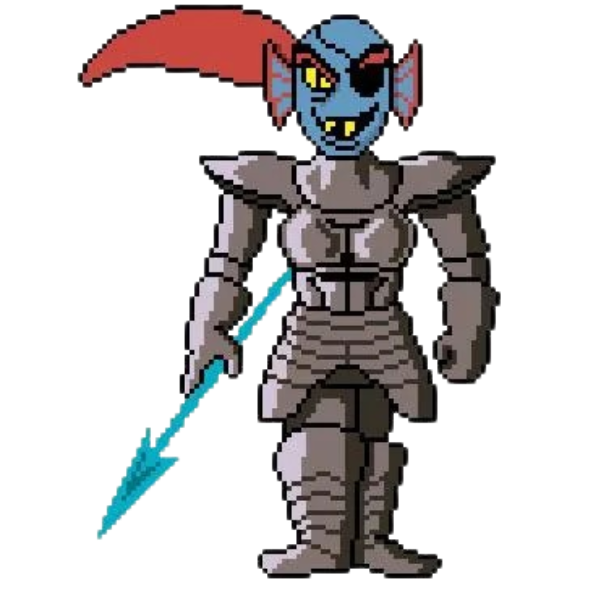

Voltar para a página inicial
UNDYNE
Undyne é a chefe da Guarda Real, uma guerreira determinada e feroz que
inicialmente tenta capturar Frisk. Ela é conhecida por sua coragem, força e lealdade
ao rei Asgore. Apesar de sua aparência intimidadora, Undyne também é honesta,
apaixonada e justa. Undyne valoriza o que é certo acima de ordens cegas.
Durante a rota PACIFISTA, ela desenvolve uma relação de amizade com Frisk e
também tem uma conexão forte com Alphys, revelando um lado mais sensível.
Já na rota GENOCIDA, ela se torna Undyne the Undying, um dos chefes mais difíceis,
lutando até o fim para proteger os inocentes.

"Há um sentimento ardente dentro de mim. Um sentimento que não me deixa morrer."